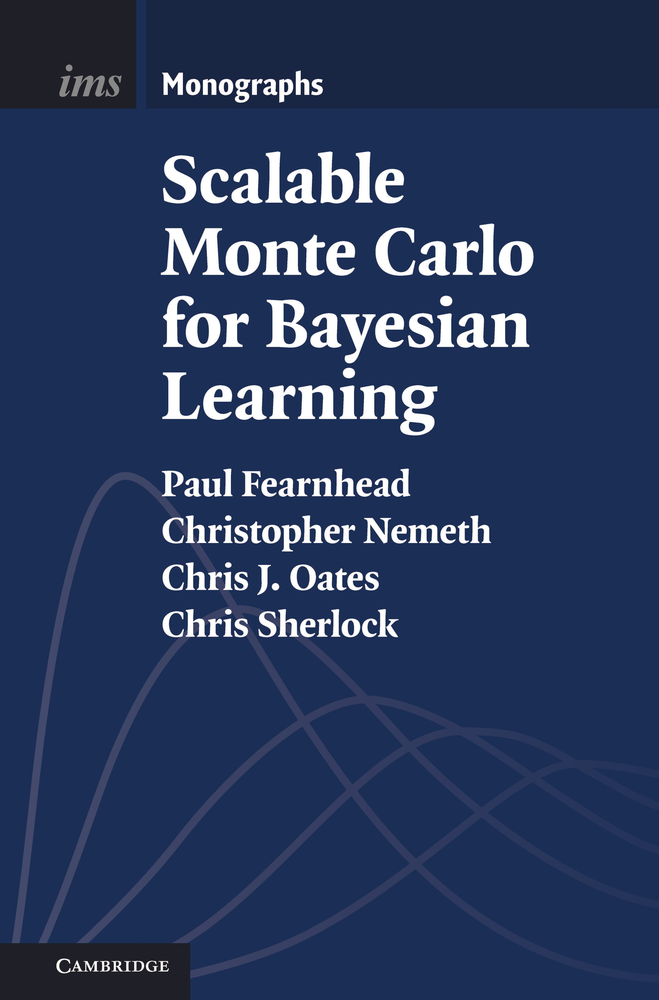
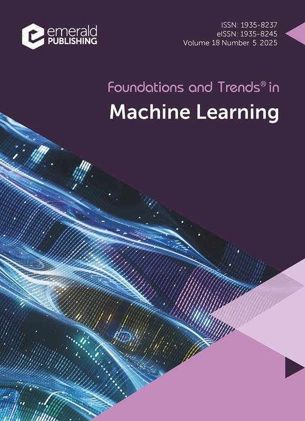

Institute of Mathematical Statistics Monographs, Cambridge University Press, 2025.
A graduate-level introduction to advanced topics in Markov chain Monte Carlo (MCMC), as applied broadly in the Bayesian computational context. The topics covered have emerged as recently as the last decade and include stochastic gradient MCMC, non-reversible MCMC, continuous time MCMC, and new techniques for convergence assessment. A particular focus is on cutting-edge methods that are scalable with respect to either the amount of data, or the data dimension, motivated by the emerging high-priority application areas in machine learning and AI. Examples are woven throughout the text to demonstrate how scalable Bayesian learning methods can be implemented.

Foundations and Trends in Machine Learning, TBA.
This text provides a rigorous overview of theoretical and methodological aspects of probabilistic inference and learning with Stein's method. Recipes are provided for constructing Stein discrepancies from Stein operators and Stein sets, and properties of these discrepancies such as separation, convergence detection, and convergence control are discussed. Further, the connection between Stein operators and variational gradient descent is set out in detail. The main definitions and results are precisely stated, and references to all proofs are provided.